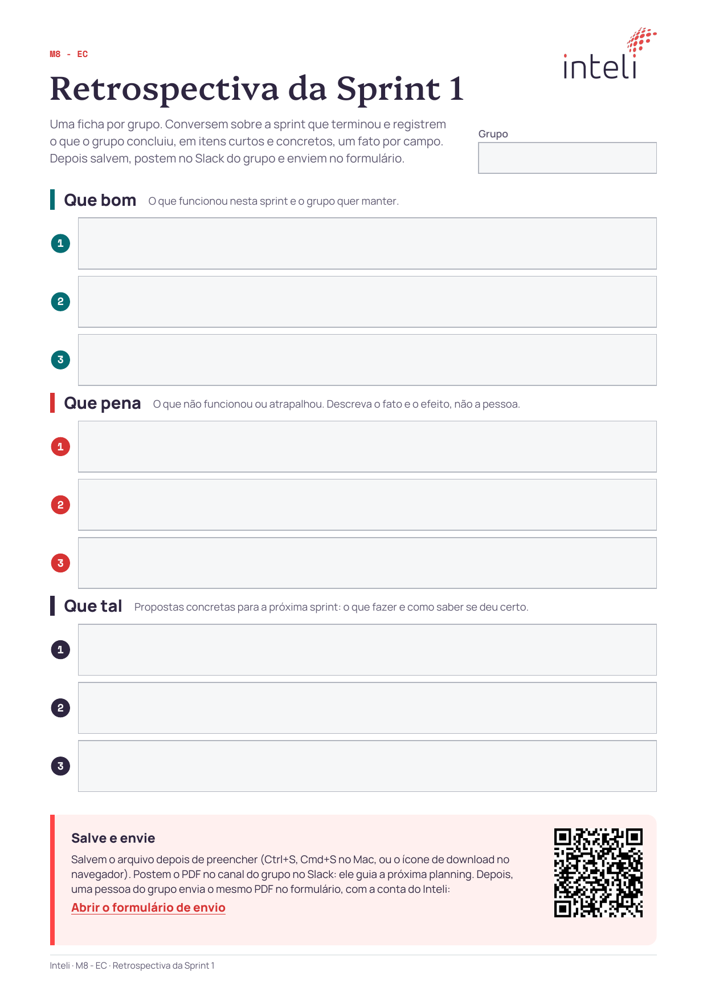

M8 EC - Planning da Sprint 2
Prof. Nicola
Que bom
O que funcionou e vale manter
Que pena
O que atrapalhou: o fato, não a pessoa
Que tal
O que tentar na sprint 2

Uma ficha por grupo: preencham, postem no Slack do grupo e enviem pelo formulário
Semana 3
| seg 26/10 | Planning da Sprint 2 | Orientação | |
| ter 27/10 |  | Revisão de ROS 2 e introdução ao Nav2 | Computação |
| qua 28/10 | Relações e hierarquias na tomada de decisões | Liderança | |
| qui 29/10 |  | PLN clássico e representação de texto | Computação |
| sex 30/10 | Algoritmos de grafos I: travessia | Computação |
Semana 4
| seg 02/11 | Feriado | ||
| ter 03/11 |  | Feedback sensorial e takeover | Design |
| qua 04/11 | Algoritmos de grafos II: Dijkstra e Prim | Computação | |
| qui 05/11 | | Word embeddings: word2vec e GloVe | Computação |
| sex 06/11 | Entrega da Sprint 2 | Orientação |